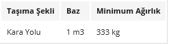
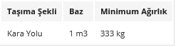

HACİM VE DESİ HESAPLAMA TABLOSU
Taşımacılıkta, taşınan
yükün ağırlığı ile birlikte hacmi yani kapladığı alan da önem göstermektedir.
Bu nedenle taşıma çeşitlerine göre metreküp bazında minimum ağırlıklar
aşağıdaki tabloda gösterilmiştir.
 

Kargonuzun hacim
ağırlığını hesaplamak için aşağıdaki tabloyu kullanabilirsiniz. Kap
(koli-sandık-palet) adedini ve kap ölçülerini (santimetre cinsinden) giriniz.
Doldurulması gereken alanlar sadece ” Koli Adedi, Genişlik, Uzunluk,
Yükseklik“Genişlik x Uzunluk x Yükseklik x koli adedi = m3Örnek: Genişliği
0,50m, uzunluğu 0,50 m. ve yüksekliği 1,72 m. olan 10 koli için toplam hacim
4,3 m3 dür.
Hacim Ölçülerinin Değişimi
1 kilometre = 0.62 mil
1 kübik foot = 0.0283 kübik metre
1 kübik yard = 0.765 kübik metre
1 fluid ounce = 29.6 mililitre
1 fluid ounce = 29.6 mililitre
1 U.S. quart = 0.946 litre
1 U.S. gallon = 0.84 imperial gallon
= 3.8 litre
1 imperial gallon = 1.2 U.S. gallons
= 4.5 litre
1 imperial gallon = 1.2 U.S. gallons
= 4.5 litre
1 dry quart = 1.1 litre
1 dry quart = 1.1 litre
1 imperial bushel = 1.03 U.S.
bushels = 36.37 litre
1 kübik santimetre = 0.06 kübik inç
1 kübik metre = 1.3 kübik yarda
1 millilitre = 0.034 fluid ounce
1 litre = 1.06 U.S.quarts = 0.9 dry
quart
1 dekalitre = 0.28 U.S. bushel
Uzunluk Ölçülerinin Değişimi
1 inç = 2.54 santimetre
1 foot = 0.305 metre
1 yarda = 0.914 metre
1 mil = 1.609 kilometre
1 santimetre = 0.39 inç
1 metre = 39.37 inç = 3.28 feet =
1.094 yarda
1 kilometre = 0.62 mil